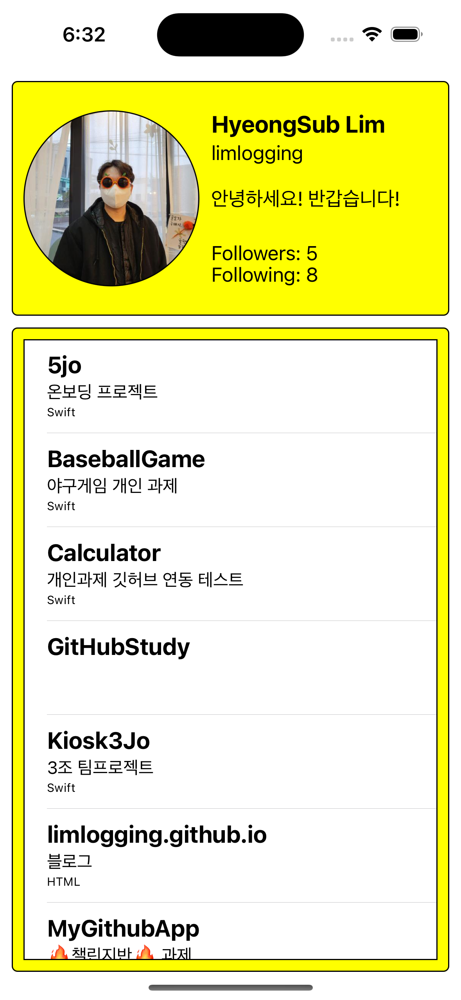

[내배캠] 챌린지반 과제 1차 제출 - GitHub App 만들기
챌린지반 과제 목표
- 본인의 깃허브 프로필 페이지를 만들어주세요.
- 화면 상단에는 프로필 상세 정보가 출력되고 아래는 Repository 목록이 출력되는 앱을 만들어주세요.
- Repository 목록은 페이징 처리를 위하여 본인 Repository를 가져온 후 apple의 Repository를 붙여주세요.
요구사항
- iOS 15 이상
- Swift 5 이상
- git을 사용해주세요.
- README를 작성해주세요.
- 가능하다면 MVC 아키텍처를 사용해주세요.
- 기본 iOS에서 제공하는 ViewController를 사용하면 됩니다.
- 오픈소스 라이브러리는 아래의 룰을 따라주세요.
- 필수 사용
- Alamofire
- KingFisher or SDWebImage
- 아래의 라이브러리는 사용하지 마세요.
- RxSwift, RxCocoa, Rx…..
- Moya
- SnapKit
- 그 외의 라이브러리는 사용하셔도 됩니다. 단 사용하시면 나중에 이유를 설명할 수 있어야 합니다.
- 필수 사용
- Pull To Refresh 기능 구현해주세요.
- 다음 페이지 스크롤링 가능하게 해주세요.(페이징처리)
- 디자인은 Code, Storyboard 편하신 방법으로 하시면 됩니다.
- 단 Code 작성할 때 Frame 기반은 지양해주세요.
- TableView나 CollectionView를 사용해주세요.
- Delegate, DataSource를 사용해주세요.
- 디자인은 과제채점에 영향을 주지 않습니다.
라이브러리 설치
새로고침 기능
// MARK: - viewDidLoad()
override func viewDidLoad() {
super.viewDidLoad()
//Pull to refresh 추가
tableViewRefresh()
}
// MARK: - Pull to refresh 컨트롤 추가
func tableViewRefresh() {
let refreshControl = UIRefreshControl()
refreshControl.attributedTitle = NSAttributedString(string: "새로고침")
refreshControl.addTarget(self, action: #selector(refreshData), for: .valueChanged)
repositoriesTableView.refreshControl = refreshControl
}
// MARK: - pull to refresh 메서드
@objc func refreshData() {
DispatchQueue.main.asyncAfter(deadline: .now() + 1.0) {
// 테이블 뷰 리로드
self.repositoriesTableView.reloadData()
// UIRefreshControl 종료
self.repositoriesTableView.refreshControl?.endRefreshing()
}
}
깃허브에서 정보 가져오기
프로필
// MARK: - 깃허브에서 프로필 정보 가져오기
func getGithubProfile() {
AF.request(profileUrl).responseJSON { response in
switch response.result {
case.success(let value):
if let json = value as? [String: Any],
let name = json["name"] as? String,
let login = json["login"] as? String,
let followers = json["followers"] as? Int,
let following = json["following"] as? Int,
let repoCnt = json["public_repos"] as? Int,
let avatarURLString = json["avatar_url"] as? String,
let avatarURL = URL(string: avatarURLString) {
let profile = GithubProfile(myImage: avatarURL, name: name, login: login, followers: followers, following: following, repoCnt: repoCnt)
self.showProfileInfo(profile)
}
case .failure(let error):
print("error: \(error)")
}
}
}
// 구조체에서 데이터를 가져와 label 및 imageView에 보여주는 함수
func showProfileInfo(_ profile: GithubProfile) {
//SDWebImage를 사용하여 프로필 이미지 다운로드 및 출력
profileImageView.sd_setImage(with: profile.myImage, placeholderImage: nil, options: [], completed: nil)
profileName.text = profile.name // 이름 출력
profileLogin.text = profile.login // 로그인 출력
profileFollowers.text = "Followers: \(String(profile.followers))" //followers
profileFollowing.text = "Following: \(String(profile.following))" //following
self.repoCnt = profile.repoCnt
repositoriesTableView.reloadData() //최초 실행하면 numberOfRowsInSection를 먼저 실행하고 깃허브 데이터를 받아와서 row 수가 0임, row수를 깃허브 repo수 만큼 보이도록 새로고침 추가
}
레포지토리
// MARK: - 깃허브에서 리포지토리 정보 가져오기
func getGithubRepositories() {
AF.request(repositoriesUrl).responseJSON { response in
switch response.result {
case.success(let value):
if let repositories = value as? [[String: Any]] {
for repo in repositories {
if let name = repo["name"] as? String,
let htmlUrl = repo["html_url"] as? String {
//description, language는 없거나 Null 값이 있어서 닐 코얼레싱 추가
let description = repo["description"] as? String ?? ""
let language = repo["language"] as? String ?? ""
//배열에 저장
self.repoArr.append(GithubRepositories(name: name, htmlUrl: htmlUrl, description: description, language: language))
}
}
}
case .failure(let error):
print("에러: \(error)")
}
}
}
실행화면

실행영상
마무리
- 테이블뷰 row를 선택할때 배열의 row로 해야하는데 로딩하자마자 tableview에 데이터를 보여주기위해서 프로필에서 repoCnt를 구했다.
- 로딩때 데이터를 보여주기위해 reload를 많이 사용했는데 다른 방법이 있을 것 같다.
- api를 사용할 때 아래 경고문이 떴는데 개선할 방법을 찾지 못했다. 다른 방법을 고민해야할 것 같다.
- ‘responseJSON(queue:dataPreprocessor:emptyResponseCodes:emptyRequestMethods:options:completionHandler:)’ is deprecated: responseJSON deprecated and will be removed in Alamofire 6. Use responseDecodable instead.
- 새로고침할때 배열을 다시 가져오는건데 배열을 초기화 하고 다시 불러야하나 고민했는데 우선 그냥 진행했다.
- 페이징처리를 못해서 찾아보고 추가해야겠다.
- 배운내용을 활용해서 구현하였고 라이브러리 설치와 api 사용을 경험해볼 수 있었다.
- 튜터님 피드백 받고 다시 수정 해봐야겠다. 우선 제출! 🔥🔥🔥